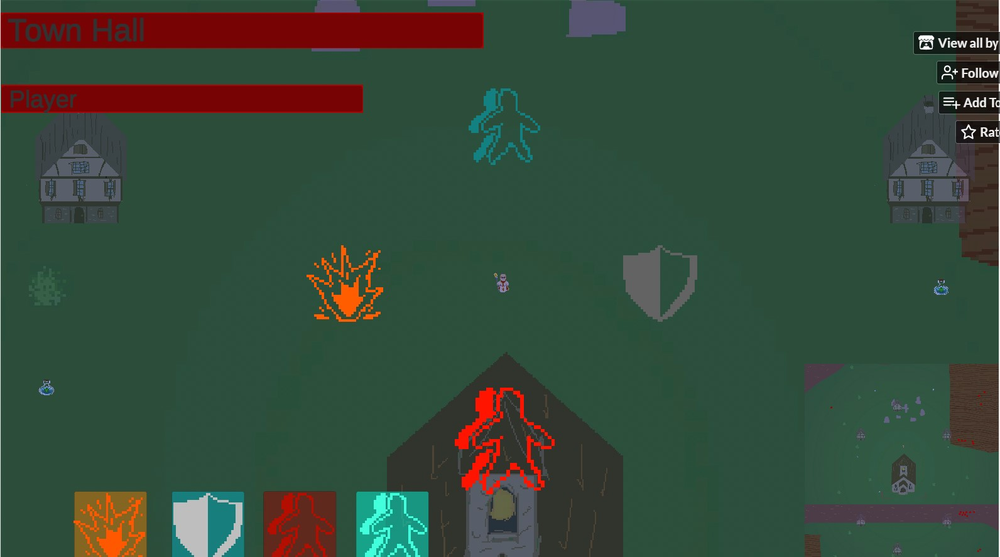
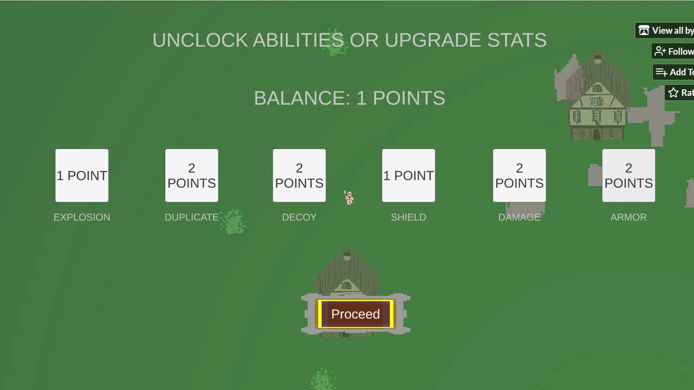
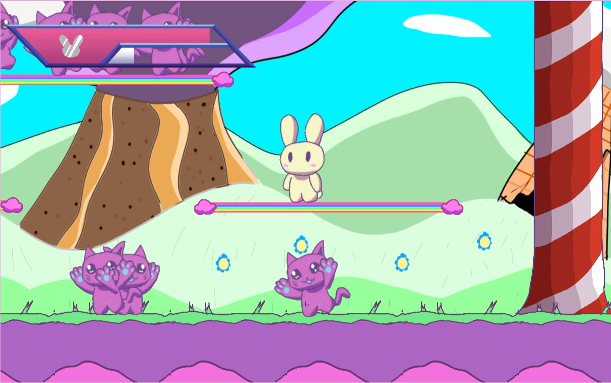
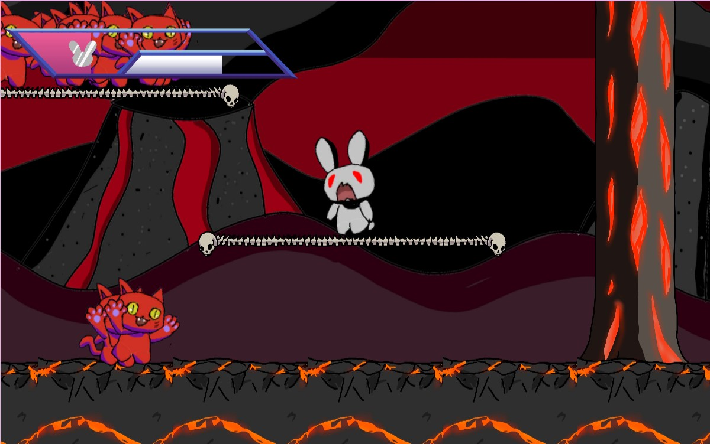
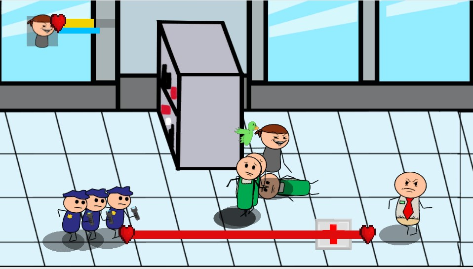
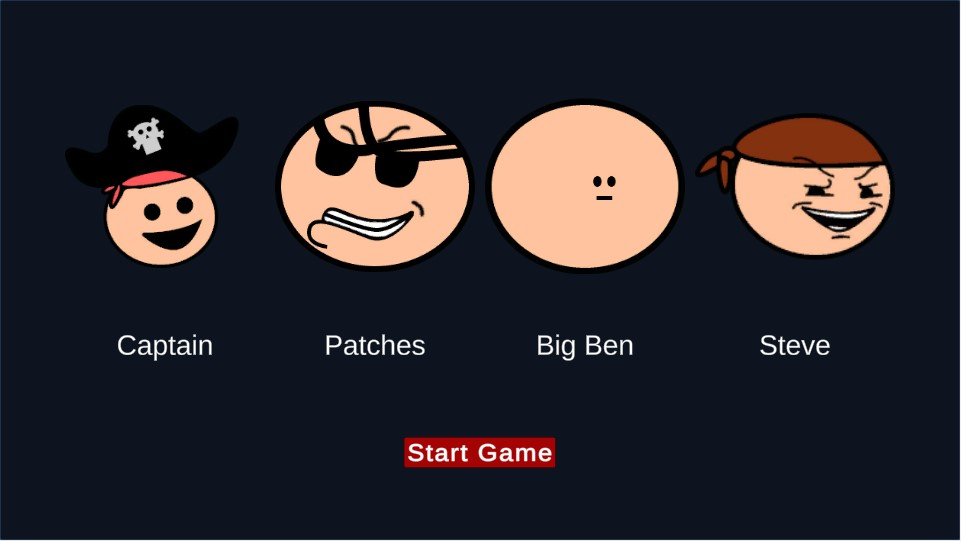
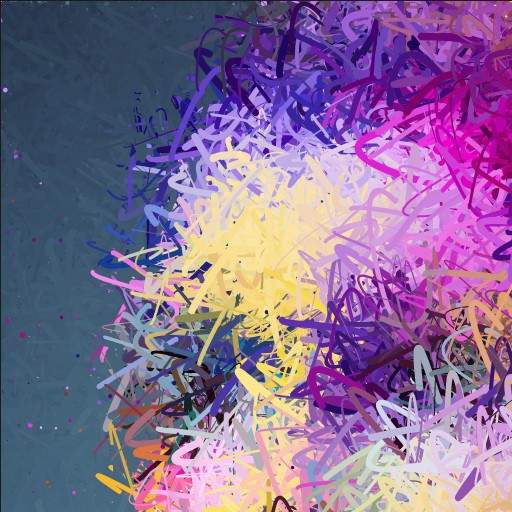
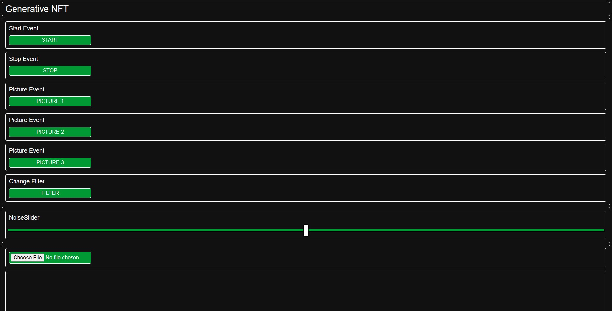
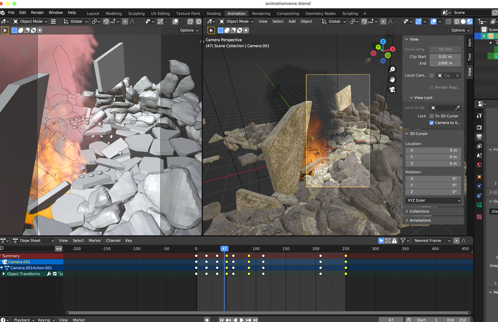
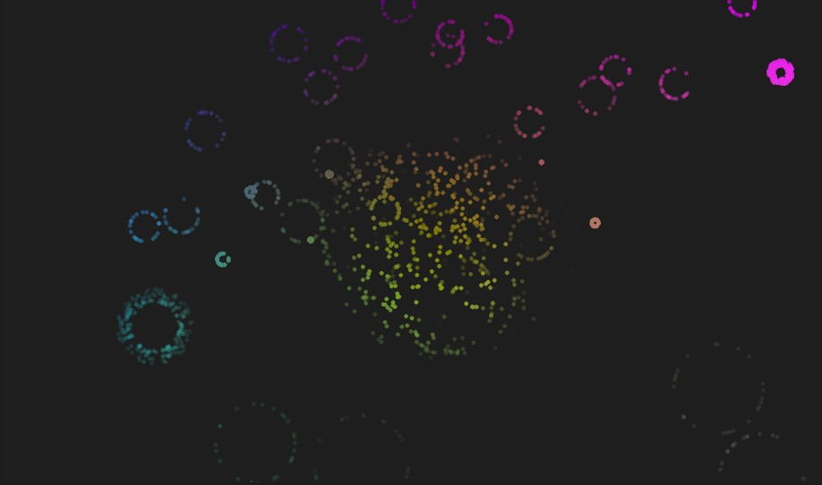

Solunis was developed by a team of four people over 48 hours using Photoshop and Unity to create our game. We split the work up by sections. Two people worked on the art and two people worked on creating the code that would make the game operate. I was tasked with one other to work on the code for the project. I worked on creating the basic movement for the player and enemies as well as the combat system involing attacks, damage, healing, and the UI. Aside from those tasks, I was also in charge of implimenting the art and animations into unity to work with the movement and attacks of the various characters.

I also worked on the point buy system pictured above for this project. This was my greatest challenge as I hadn't previosuly worked on something like this. I was able to learn to use singleton patterns to store the information and keep the data through numrous scenes and scripts. Using this now I was able to imporove my past and future projects by using this same pattern.

Kitty Hop was developed for the Global Gam Jam 2022 by a small team of three. The game was developed with the theme of duality in mind. The game involves jumping on enough kittens to get the golden carrot to appear. The player must collect the carrot to win the level. The theme of duality comes in when the player jumps on enough kittens to cause a switch to a darker mirrored world where the kittens are faster and the player can now throw projectiles at the kittens.

I worked on programming Kitty Hop. I worked on the basic platformer movement with both the player and the enemies. I also did work on the combat system for the players and enemies linking their animation to the actions they could take in the game. I also worked on the portals for levels 2 and 3 which could teleport the player between the two point when they collided with the portals hitbox. The main coding challenge for this project was developing the switch between the two worlds. I accomplished this by creating two spirtes for each object and toggling them on and off based on the number of kittens killed which would scales to the lower bar on the player's UI.

Pirate Time was developed as a class project for UW-Whitewater starting in mid November of 2022. I worked on it with one other classmate, we separated the work with one person handling the coding of the prject and one person worked on art. I stepped ou tof my usual role and took initiative on the art aspect of this project. All of the art for this project is original and was done in the month period we had for the final. I was in charge of the art as well as the animations for all player characters and enemies. I used Unity's built in skeletal animation tool to create the animation sfor all the characters in the game.

Along with all of the visual aspects of the project I also handled some of the coding elements as well. I created all of the managers that would use the singleton pattern to exist through different scenes including the Audio Manager, Player Manager, and Game Manager. I also created the menu scenes as well as the player select screen as shown above. The character select screen works by using the player manager to record which character the player selects then will spawn in the appropriate player at the beginning of each playable scene.

Interactable NFT's was a project developed by myself and professor Nick Hwang for UW-Whitewater's Research Apprenticeship Program. We wanted to make a way for multiple people to interact through the web to edit the same canvas. We decided on using P5.js and its uses with generative NFT's as our canvas of choice. I programmed on P5.js to create the framework of what the users can edit. They can choose between three preset images or upload their own photos. The sketch in P5.js then takes the image information and pixelates the original images the constantly edits the pixel by creating curves the update based on a random function and a slider that is controled by the external website. The website also contains the means to start and stop the sketch creating a still image. To stop too many users from overloading the system we created a timer so that a button would be frozen for all other users when a user is interacting with a button.

Although it is not currently an NFT it can be mad into one wth a purchase however, we didn't want to purchase it until we were ready to finish the project. We planned to take the project further by including in interactive art board for the project to replace the input images. The possibilities are endless for what we can add to the website for the player to interact withand we plan to explor more with these generative and highly interactable NFT's.

Immersive art was a project developed by myself and Professor Xiaohong Zhang for UW Whitewater's summer research program. We divided the project into two parts. I handled the coding aspects of the project working in P5.js while Xiaohong worked with Blender and Adobe After Effects. I worked in P5.js to create an audio visualizer that listens to the music being played in the program and responds based on if detects a high, low, or mid notes and plots them on a graph where it them eminates particles for a brief amount of time until the next not is detects. This creates an effect as appear like these random particles are flowing with the music as it plays. Xiaohong's work in Blender was creating 3D models of buildings the would crumble and fall and then build back up again. She would then comnbine both videos in AfterEffects and mesh them together to create the final video.

The video will be played on a large canvas where peopple can walk around a view it from all angles. We plan to continue developing this project before we eventually put it into an exhibit or community gallery. We are currently refining our work to create a higher quality final video. We also have reached out to another professor at Whitewater who is known for his audio projects and compostions to compose music for our project. We plan to show our prototype at the NCUR national research conference in April of 2023.